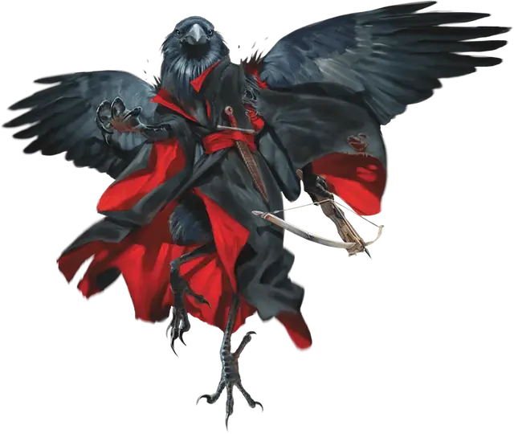

Верворон
Wereraven
Средний Гуманоид (Человек, Перевёртыш)

Класс Доспеха 12
Хиты 31 (7к8)
Скорость 30 футов (10 футов в облике ворона), летая 50 футов (в облике ворона или гибридном облике)
| мод | спас | ||
|---|---|---|---|
| СИЛ | 10 | +0 | +0 |
| ЛОВ | 15 | +2 | +2 |
| ТЕЛ | 11 | +0 | +0 |
| мод | спас | ||
|---|---|---|---|
| ИНТ | 13 | +1 | +1 |
| МДР | 15 | +2 | +2 |
| ХАР | 14 | +2 | +2 |
Навыки Восприятие +6, Проницательность +4
Чувства пассивное Восприятие 16
Языки Общий (не может говорить в облике ворона)
Опасность 2 (450 опыта)
Бонус мастерства +2
Особенности
Подражание. Верворон может подражать несложным звукам, которые он уже слышал, таким как шепот человека, крик ребенка или животного. Существо, слышащее эти звуки, может понять, что это подражание, при успешной проверке Мудрости (Проницательность) Сл 10.
Регенерация. Верворон восстанавливает 10 хитов в начале своего хода. Если верворон получает урон от посеребрённого оружия или заклинания, эта особенность не действует в начале следующего хода верворона. Верворон умирает только в том случае, если он начинает свой ход с 0 хитов и не регенерирует.
Ликантропия верворонов. Сведения о ликантропах в Бестиарии содержит правила для персонажей, страдающих различными формами ликантропии. Следующий текст относится конкретно к ликантропии верворонов.
Ловкость персонажа, проклятого ликантропией верворонов, становится равной 15, если его текущий показатель меньше этого значения. Броски атаки и урона для клюва верворона основаны на Силе или Ловкости персонажа, в зависимости от того, какая характеристика выше. Клюв верворона наносит 1 колющего урона в облике ворона (модификатор не применяется к этому урону) или 1к4 колющего урона в гибридном облике (модификатор персонажа применяется к этому урону). Эта атака несет в себе проклятие ликантропии оборотней.
Действия
Мультиатака (только в облике гуманоида или гибрида). Верворон совершает две атаки оружием, одна из которых может быть совершена его ручным арбалетом.
Клюв (только в облике ворона или гибрида). Рукопашная атака оружием: +4 к попаданию, досягаемость 5 фт., одна цель. Попадание: 1 колющего урона в облике ворона или 4 (1к4 + 2) колющего урона в гибридном облике. Если цель — гуманоид, она должен преуспеть в спасброске Телосложения Сл 10 или станет проклята ликантропией верворона.
Короткий меч (только в облике гуманоида или гибрида). Рукопашная атака оружием: +4 к попаданию, досягаемость 5 фт., одна цель. Попадание: 5 (1к6 + 2) колющего урона.
Ручной арбалет (только в облике гуманоида или гибрида). Дальнобойная атака оружием: +4 к попаданию, дальность 30/120 фт., одна цель. Попадание: 5 (1к6 + 2) колющего урона.
Смена формы. Верворон превращается в гибрид ворона и гуманоида, или в ворона, или принимает свой гуманоидный облик. Его характеристики, за исключением его размера и скорости, одинаковы в каждом облике. Все несомое и носимое им снаряжение не превращается. Он принимает свой гуманоидный облик, если умирает.
Описание
Вервороны — это скрытные, осторожные ликантропы, которые стремятся слиться с обществом и тонко противостоять злу. Как признанные враги злобных существ, вервороны преследуются злыми силами. Зная это, вервороны редко раскрывают свою природу. Тем не менее, народные сказки рассказывают о жутких фигурах с крыльями ворона, которые появляются перед катастрофами и делятся таинственными пророчествами. Такие истории в некотором смысле правдивы, так как там, где ступают вервороны, зло идёт следом.
Вервороны используют лёгкое оружие, чтобы не распространять свое проклятие на тех, кто будет злоупотреблять им.
Благодать верворонов. Вервороны называют свои сплоченные группы благодатью. Неудивительно, вервороны хорошо ладят с воронами и часто прячутся среди них.
Щедрые коллекционеры. Вервороны собирают блестящие и драгоценные безделушки. Они любят делиться своим богатством с нуждающимися и в гуманоидной форме скромно жертвуют деньги на благотворительность. Они принимают меры, чтобы уберечь магические предметы от злых рук, пряча их в тайных укрытиях.